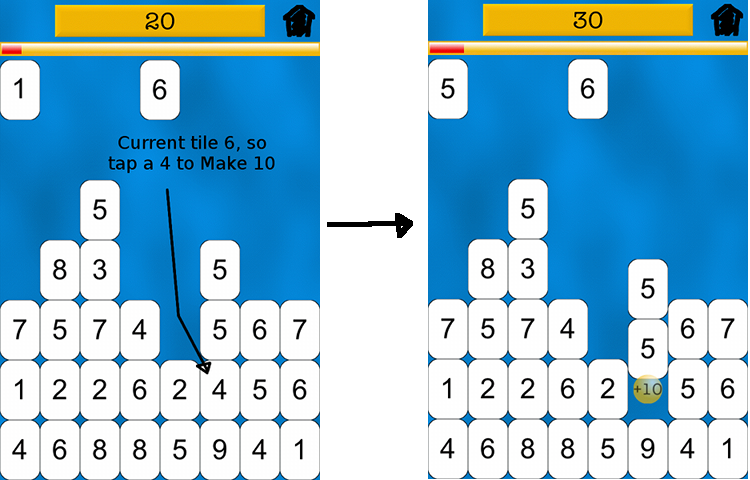
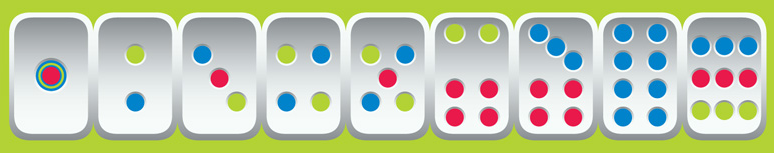

About the game
Make 10 as many times as you can before the wall reaches the top!
- Break the wall by tapping the tile that will add to 10 with your current tile.

- Every time you clear a level, the wall speed will increase or the total will change (or both) depending on your setting and level.
Adding to 10 is a fundamental skill necessary for more complex math.
- This game is designed for children to have fun while practicing mental math.
- Younger kids can use Mahjong style dots to count up the values and also adjust the total to a number as small as 5.

- For more of a challenge choose a sum of 60 to practice minutes to the hour or 100 to make change for a dollar.
Not just for kids!
- Everyone can test their mental math abilities.
- Who will set the high score on your device?
About us
Bess Siegal designed and developed Make 10 using Cocos2d-iphone and releases the code as open-source under the Apache 2.0 license.
- Bess is the mother of 3 young girls who love learning and games. Her children inspired her to write this app and continue to inspire her everyday.
- She thanks James Siegal for making this game possible and Zack Grossbart for showing her the ropes.
- Would you like to see this as a multiplication game? Got any other feedback for her? Email Bess at bess.mah@gmail.com.
Yancey Labat created the artwork for Make 10.
Rate it
If you like Make 10, please rate it in the AppStore with 5 stars. Thanks!
Version 1.0